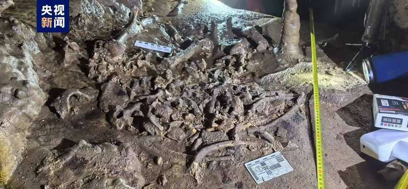
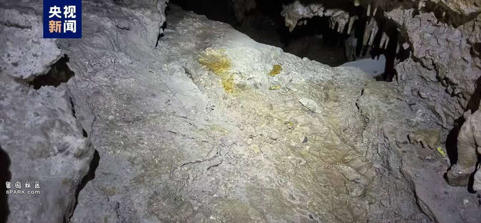
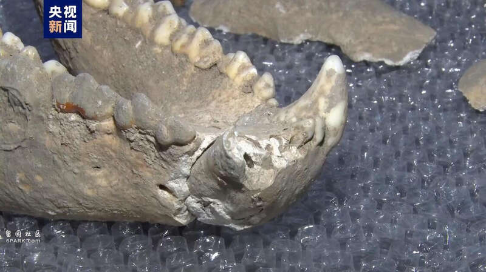
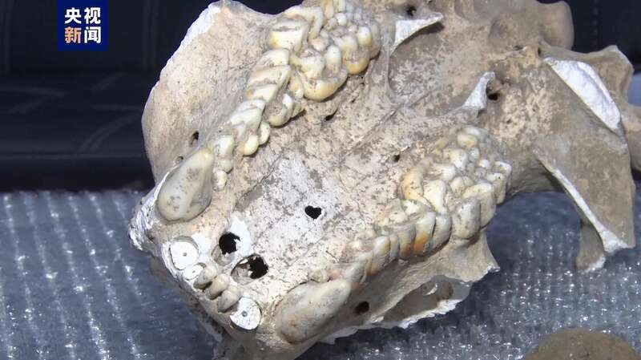
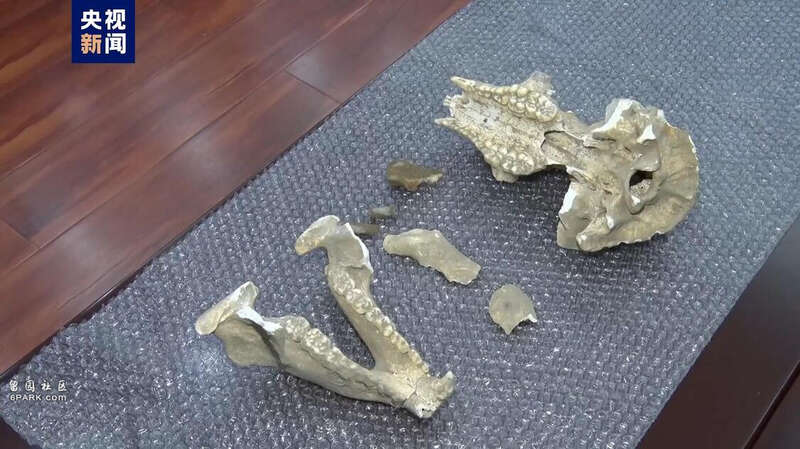

△摄影：王迪 武涛
近日，陕西省汉中市城固县一石灰岩溶洞内发现大熊猫化石。根据现场采集，头骨化石完整度90%以上，其他骨骼化石完整度达70%。专家初步判断，化石的时代为第四纪中更新世晚期至晚更新世，距今20万年至距今1万年。这是陕西省首次发现保存完整程度较高的大熊猫化石，具有很高的科研价值和科普价值。

△摄影：王迪 武涛
发现大熊猫化石的地点位于汉中市城固县一处溶洞内，洞深约180米。大熊猫化石在溶洞深处一个石灰岩平台上。周边环境阴暗潮湿，化石保存位置上部洞顶不断有水滴落，下部还有一条暗河。专家介绍，“大熊猫化石骨架胶结在灰岩平台，露出岩石表面，化石表面有次生碳酸钙沉积，面积约有1平方米。肱骨、股骨、脊椎、肋骨等大熊猫头后骨骼清晰可见，长度3~20厘米不等。”

△摄影：王迪 武涛
综合化石头骨形态、牙齿结构特征及矢状嵴发育程度等因素，专家初步判断该大熊猫化石属于成年大熊猫，可能为雌性个体，长30.2厘米、宽17.3厘米、高21.2厘米，保存的完整程度在国内较为罕见。

△摄影：王迪 武涛
陕西省古生物化石专家委员会委员 研究员 胡松梅：以前发现的都是零星的，就是单个的牙齿或者单个一个骨骼。这次的大熊猫化石很完整，有头骨、跖骨，还有脊椎骨。是目前陕西首个完整度较高的大熊猫化石。对研究大熊猫的演化历史非常有意义。

△摄影：王迪 武涛
据了解，大熊猫骨骼化石标本采集完成后，陕西省自然资源厅将组织专家通过测年、测DNA等方式对该化石进一步保护研究。
Advertisements